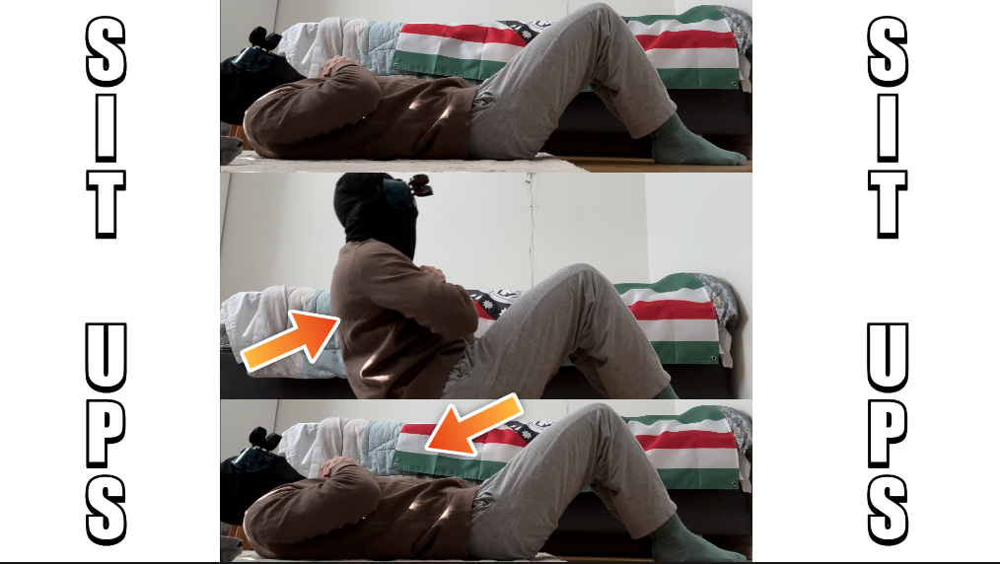
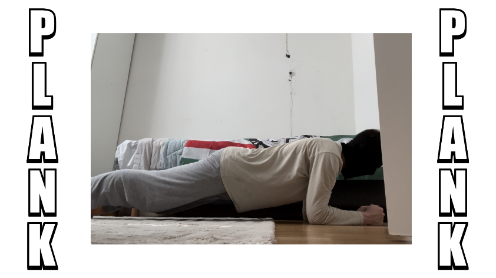
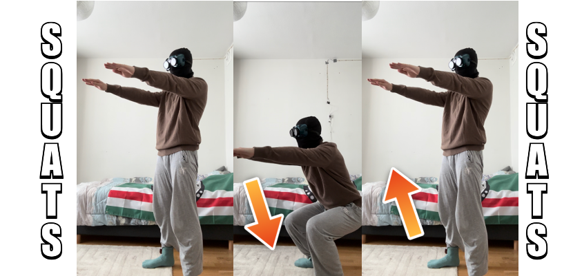

För att börja med ditt äventyr så måste du veta vart du ska börja. Om du fortsätter att läsa nedanför så kommer du hitta övningar som du kan öva med både hemma och ute. Vad väntar du på? Kör igång!
Här kommer du få flera övningar som du ska träna med, tänk att stretcha mycket innan du börjar, du kan köra dessa övningar i vilken ordning som helst fast du måste köra precis som det står i instruktionerna, kämpa på nu!
Träna först 10 armhävningar i 3 sets, gör 10, vila 30 sekunder, och repetera 2 gånger till! Vila 60 sekunder efter du är klar och gå vidare till nästa övning.
Armhävningar tränar främst bröst-, axel- och armmusklerna, särskilt bröstmusklerna (pectoralis major), främre deltamusklerna (anterior deltoid) och triceps.
Träna först 10 sit ups i 3 sets, gör 10, vila 30 sekunder, och repetera 2 gånger till! Vila 60 sekunder efter du är klar och gå vidare till nästa övning.
Sit ups tränar främst de raka magmusklerna (rektus abdominis), men även de sneda magmusklerna (obliquus externus abdominis och obliquus internus abdominis) samt de nedre delarna av ryggmusklerna (erector spinae).
Ställ dig i samma position som bilden visar dig, och stå så i 60 sekunder. Vila sedan i 60 sekunder och gå till nästa övning.
Plankan är en övning som främst tränar de djupa stabiliserande musklerna i bålen, såsom rektus abdominis (de raka magmusklerna), transversus abdominis (de djupa magmusklerna), samt musklerna i ryggen och höfterna. Det är en effektiv övning för att förbättra kärnstyrka och stabilitet.
Träna först 10 squats i 3 sets, gör 10, vila 30 sekunder och repetera 2 gånger till! Sedan vilar du i 60 sekunder när du är klar och sen går du vidare till nästa övning.
Squats tränar främst quadriceps, gluteus maximus, hamstrings, adduktorer, kärnmuskler och vadmuskler. Det är en effektiv övning för att stärka och bygga muskelmassa i hela underkroppen.
Träna först 10 lunges i 3 sets, gör 20, vila 30 sekunder och repetera 2 gånger till! Sedan vilar du i 60 sekunder när du är klar och sen går du vidare till nästa övning. Du gör 20 i ett set eftersom båda benen får gå ner 10 gånger!
Lunges tränar främst quadriceps, gluteus maximus, hamstrings, adduktorer, kärnmuskler och vadmuskler. Det är en effektiv övning för att bygga styrka och stabilitet i underkroppen.
Så ja! Fortsätt och kämpa på nu med dessa övningar! För att ha hjälp med hur du prioriterar dina övningar och din tid så kan du under på "Schema för dig"!